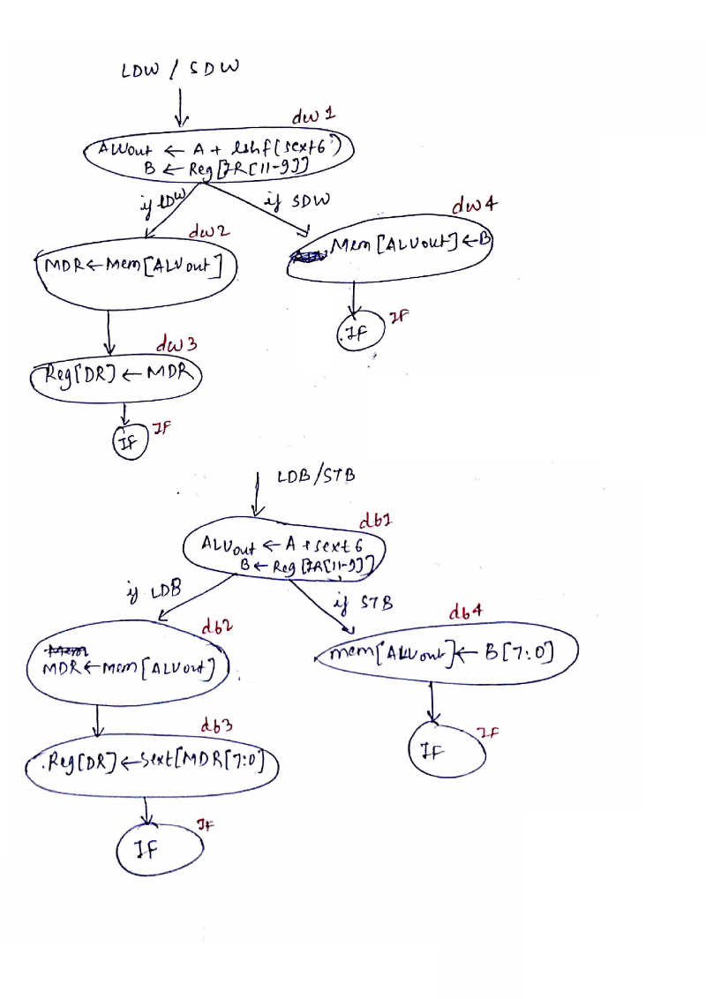
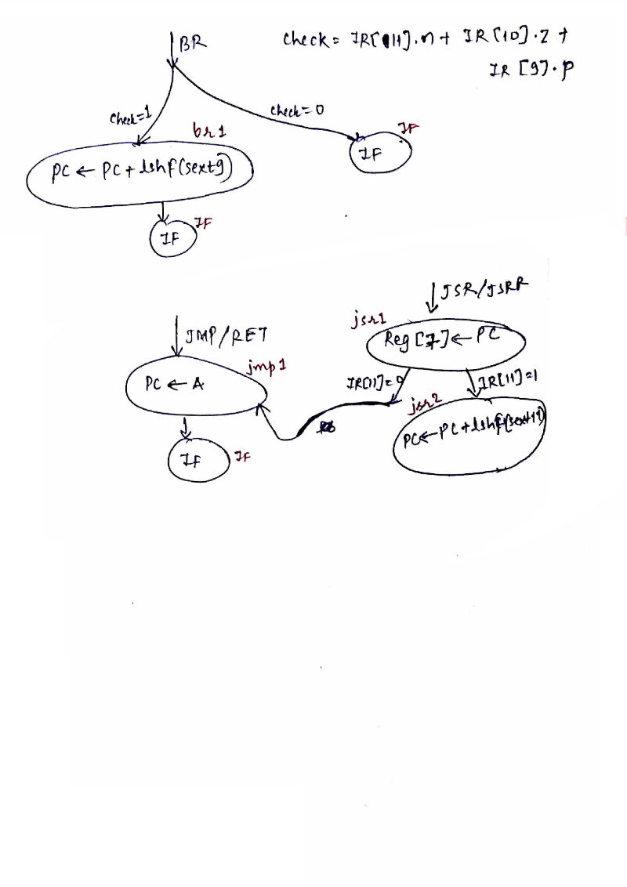
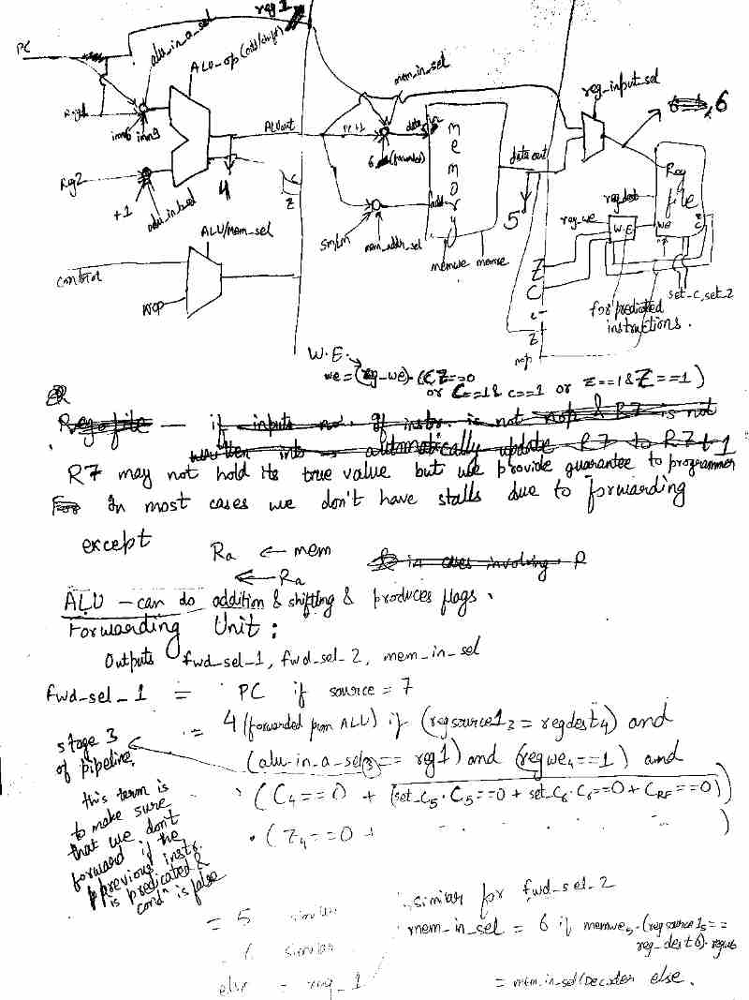
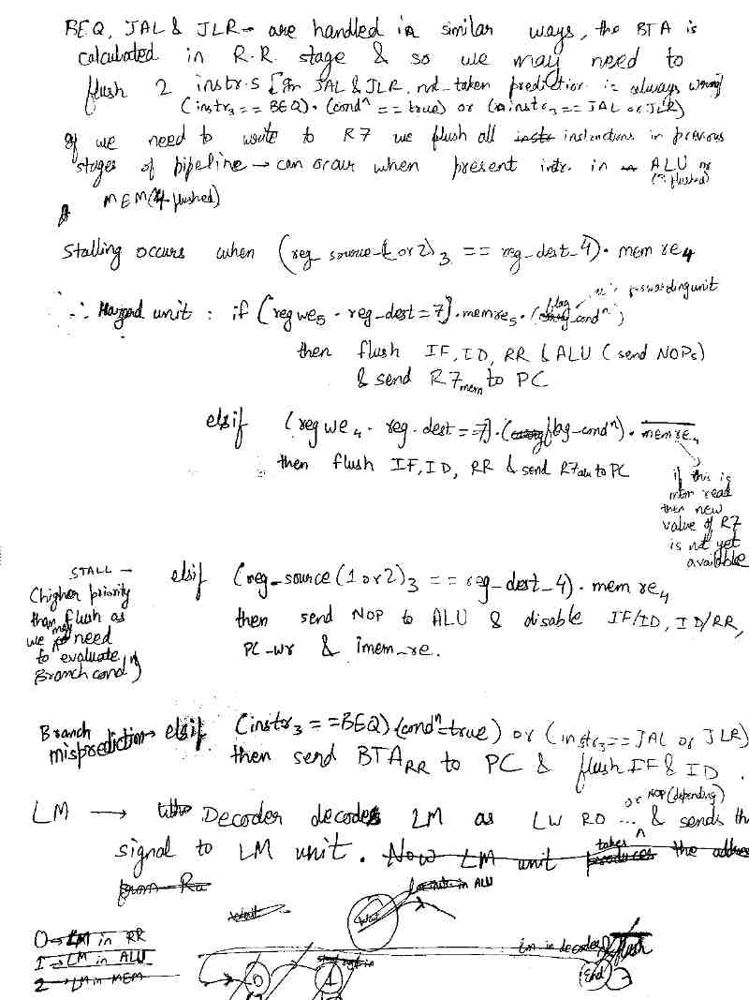
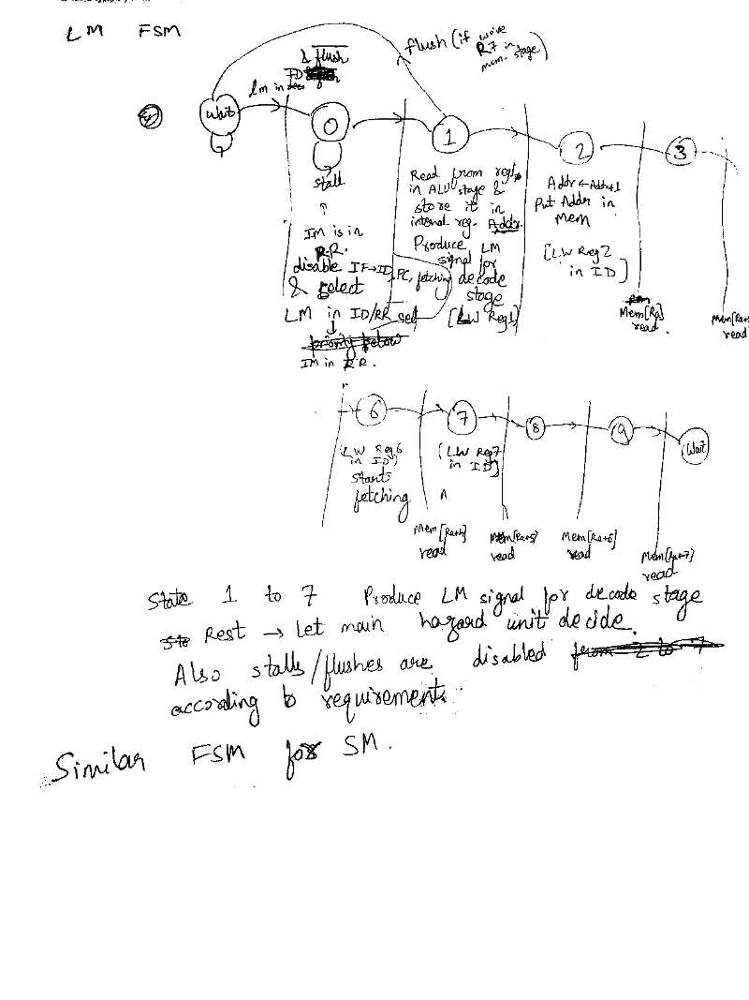

Pipeline RISC architecture on FPGA
The project was to design a 6 stage pipelined processor whose instruction set architecture was provided as a part of the course project. It was a 16-bit very simple computer developed for teaching that was based on the Little Computer Architecture. It used an 8-register, 16-bit computer system. It followed the standard 6 stage pipelines (Instruction fetch, instruction decode, register read, execute, memory access, and write back). The overall architecture was to be optimized for performance, i.e., should include hazard mitigation techniques. Hence, it should have forwarding and branch prediction technique.
Strategy
In order to simplify the problem, first a non-pipeline version of the datapath and control path was designed. Then, the non-pipeline datapath was split into 6 stages mentioned in the problem statement. Additional logics, registers and functional unit were inserted to facilitate pipeline processing. Finally a hazard mitigation routine to stop / break the flow of data in the event of data unavailability / jump statements were introduced for the control path.
Design stage - Non pipeline




Design stage - Pipeline




Acknowledgement
I would like to thank Shubham Chandak and Situ Gupta who, as a part of three member team, contributed effortlessly to the project.